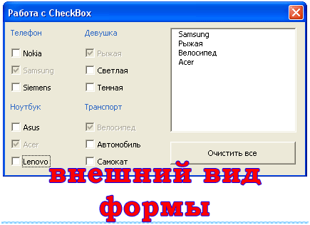

{kind=link}

Элемент управления CheckBox
Флажки (пользователи часто называют их “галками” или “птичками”) и кнопки с фиксацией используются для выбора невзаимоисключающих вариантов (если этих вариантов немного).
рис . 1.1 Элемент управления Checkbox на панели ToolBox
рис. 1.2 Элемент управления Checkbox на форме
рис. 1.3 Пример элемента управления Checkbox на форме
Флажки удобны при составлении опросов, например, из десяти цветов нужно отметить те, которые больше всего нравятся. Собственно, в этой статье мы и попытаемся сделать своеобразный опрос, но пока, давайте рассмотрим основные свойства класса CheckBox:
Name – имя объекта
Caption – определяет надпись, которая будет находится возле галочки справа.
TripleState – свойство позволяет определить третье состояние флажка. Как упоминалось выше, компонент vba CheckBox может принимать два значения: галочка установлена (true), галочка снята (false), но можно задать и третье состояние (Null) – в этом случае объект будет серого цвета и будет недоступен. Если это свойство содержит значение false – будут поддерживаться только два состояния, если true – все три.
Value – данное свойство позволяет получить состояние выбора (true, false или Null).
Событие Change класса CheckBox происходит при изменении состояния флажка.
И так, цель задания: добавить в проект форму, на ней разместить 12 флажков, разделенных на 4 группы по 3 штуки, Например,
Ниже приведен пример формы:

Справа добавлен компонент ListBox – как только мы будем ставить галочку для vba CheckBox, элемент сразу будет добавляться в список, плюс, элемент управлении Флажок сразу будет становится недоступным после выбора (свойство Enabled примет значение False). Еще на форме (UserForm) нам понадобится кнопка, которая будет очищать список, и будет делать доступными все флажки.
В коде для формы нужно добавить следующие процедуры:
Private Sub CheckBox1_Change()
If CheckBox1.Value = True Then
ListBox1.AddItem CheckBox1.Caption
CheckBox1.Enabled = False
End If
End Sub
Private Sub CheckBox2_Change()
If CheckBox2.Value = True Then
ListBox1.AddItem CheckBox2.Caption
CheckBox2.Enabled = False
End If
End Sub
Private Sub CheckBox3_Change()
If CheckBox3.Value = True Then
ListBox1.AddItem CheckBox3.Caption
CheckBox3.Enabled = False
End If
End Sub
Private Sub CheckBox4_Change()
If CheckBox4.Value = True Then
ListBox1.AddItem CheckBox4.Caption
CheckBox4.Enabled = False
End If
End Sub
Private Sub CheckBox5_Change()
If CheckBox5.Value = True Then
ListBox1.AddItem CheckBox5.Caption
CheckBox5.Enabled = False
End If
End Sub
Private Sub CheckBox6_Change()
If CheckBox6.Value = True Then
ListBox1.AddItem CheckBox6.Caption
CheckBox6.Enabled = False
End If
End Sub
Private Sub CheckBox7_Change()
If CheckBox7.Value = True Then
ListBox1.AddItem CheckBox7.Caption
CheckBox7.Enabled = False
End If
End Sub
Private Sub CheckBox8_Change()
If CheckBox8.Value = True Then
ListBox1.AddItem CheckBox8.Caption
CheckBox8.Enabled = False
End If
End Sub
Private Sub CheckBox9_Change()
If CheckBox9.Value = True Then
ListBox1.AddItem CheckBox9.Caption
CheckBox9.Enabled = False
End If
End Sub
Private Sub CheckBox10_Change()
If CheckBox10.Value = True Then
ListBox1.AddItem CheckBox10.Caption
CheckBox10.Enabled = False
End If
End Sub
Private Sub CheckBox11_Change()
If CheckBox11.Value = True Then
ListBox1.AddItem CheckBox11.Caption
CheckBox11.Enabled = False
End If
End Sub
Private Sub CheckBox12_Change()
CheckBox12.Value = True Then
ListBox1.AddItem CheckBox12.Caption
CheckBox12.Enabled = False
End If
End Sub
Private Sub CommandButton1_Click()
CheckBox1.Enabled = True CheckBox2.Enabled = True CheckBox3.Enabled = True CheckBox4.Enabled = True CheckBox5.Enabled = True CheckBox6.Enabled = True CheckBox7.Enabled = True CheckBox8.Enabled = True CheckBox9.Enabled = True CheckBox10.Enabled = True CheckBox11.Enabled = True CheckBox12.Enabled = True ListBox1.Clear
End Sub
Процедуры от CheckBox1_Change до CheckBox12_Change носят практически один и тот же характер – идет обработка события Change. Если состояние флажка ровно true (вы поставили птичку), то в список ListBox1 с помощью метода AddItem добавляется значение, хранимое в свойстве Caption (надпись рядом с птичкой). Далее происходит присваивание значения False свойству Enabled – делаем объект CheckBox недоступным.
Процедура CommandButton1_Click отвечает за обработку клика по кнопке. Видим, что для каждого флажка свойство Enabled принимает значение True, то есть, он становится доступным. Метод Cleare – полностью очищает список ListBox1.